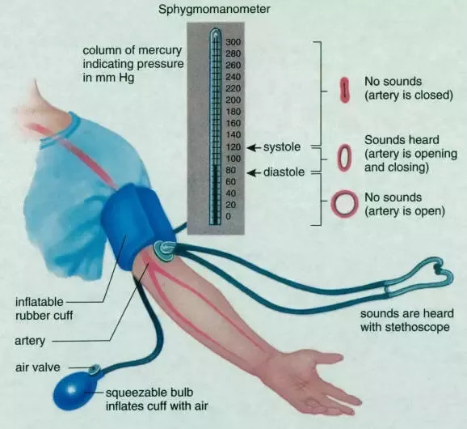

Anatomy

It consists of several parts, including:
- Cuff: This is the inflatable part of the sphygmomanometer that is wrapped around the upper arm to apply pressure to the brachial artery.
- Manometer: This is the gauge that displays the pressure readings in millimeters of mercury (mmHg). It can be analog or digital.
- Inflation bulb: This is a hand-held rubber bulb that is used to inflate the cuff.
- Air release valve: This valve is used to release the air from the cuff slowly.
- Stethoscope: This is a device used to listen to the sounds of the blood flow in the brachial artery. Some sphygmomanometers have an attached stethoscope, while others require a separate stethoscope to be used.
- Connecting tube: This is a rubber or plastic tube that connects the cuff to the manometer.
Working
-
The cuff is wrapped around the upper arm and inflated by squeezing the inflation bulb. This compresses the brachial artery and temporarily stops the flow of blood.
- The air release valve is slowly opened, and the cuff pressure is slowly released.
-
As the pressure in the cuff decreases, the blood flow in the brachial artery begins to move again. A healthcare professional or individual using the device listens to the sounds of blood flow in the artery with a stethoscope or an electronic sensor. This is called auscultation.
-
The first sound heard is the systolic blood pressure, which is the pressure when the heart is contracting and pushing blood out. The pressure at this point is recorded.
-
As the cuff pressure continues to decrease, the sound will eventually disappear. This is the diastolic blood pressure, which is the pressure when the heart is at rest between beats.
- The pressure reading is then recorded in millimeters of mercury (mmHg) on the manometer or digital display.
- Sphygmomanometers require careful use and interpretation of the readings by trained healthcare professionals. It is important to follow the instructions for use carefully and to have regular blood pressure checks to monitor for hypertension or other cardiovascular conditions.
Types

There are three major types of sphygmomanometer are present and they are:
- Aneroid sphygmomanometers: These are manual blood pressure monitors that use a gauge to measure the pressure in the cuff. They are portable and easy to use, but they require calibration and can be less accurate than other types of monitors..
- Pediatric stethoscope: This stethoscope is designed for use on infants and children.
It typically has a smaller chestpiece and shorter tubing than a standard stethoscope.
- Digital sphygmomanometers: These monitors use an electronic sensor to measure the pressure in the cuff and display the results on a digital screen. They are often more expensive than aneroid monitors, but they are easy to use and provide more accurate readings.
- Mercury sphygmomanometers: These are manual monitors that use a column of mercury to measure the pressure in the cuff. They are considered the gold standard for blood pressure measurement because they are very accurate. However, they are being phased out due to safety concerns related to mercury exposure.
- There are also specialized sphygmomanometers used for specific populations, such as infants, children, and obese individuals. These monitors have different cuff sizes and designs to ensure accurate readings. Additionally, some monitors are designed for use on specific body parts, such as the wrist or finger.
Block diagram of sphygmomanometer
Applications
- Hypertension diagnosis and management: Sphygmomanometers are used to diagnose and monitor hypertension, which is a common cardiovascular condition. Accurate blood pressure measurements are important for determining the severity of hypertension and for selecting appropriate treatment options.
- Cardiovascular disease screening: Blood pressure measurements are used as part of routine health screenings to assess a person's risk for developing cardiovascular disease. Early detection and treatment of hypertension can help prevent complications such as heart attacks, strokes, and kidney disease.
- Monitoring during surgery or critical care: Sphygmomanometers are used in hospital settings to monitor blood pressure during surgery or critical care. This allows healthcare professionals to detect and respond to changes in blood pressure in real-time.
- Research studies: Sphygmomanometers are used in research studies to collect data on blood pressure and cardiovascular health. This data can be used to develop new treatment strategies and improve understanding of the causes and risk factors for cardiovascular disease.